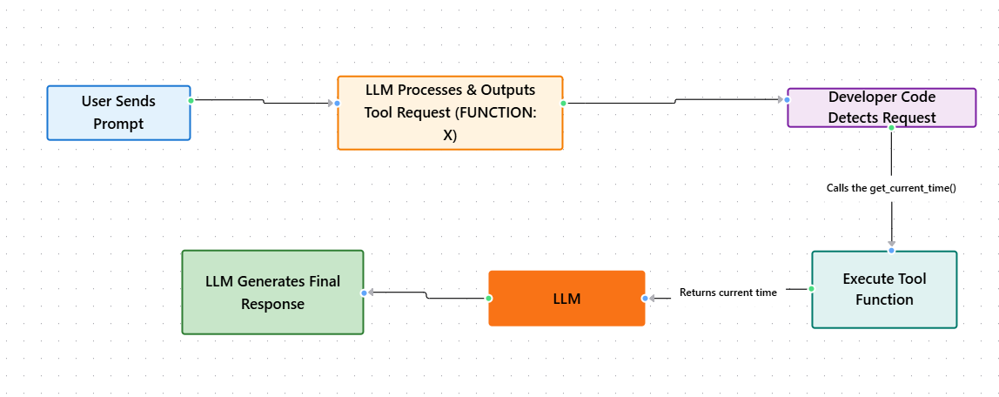

Module 3 — Episode 2
Training:Agentic AI Training
🎯 Learning Objectives
By the end of this episode, you will be able to:
- ✅ Explain how an LLM signals that it wants a function (tool) to be called
- ✅ Implement a basic mechanism for parsing and executing tool requests
- ✅ Debug the communication loop between an LLM and developer code when using tools
🧭 Overview
This episode walks through how to enable a Large Language Model (LLM) to “call” a tool — such as a function that retrieves the current time.
You’ll learn how, historically, developers instructed LLMs to request function calls using specific output formats and how developer-written code handled those requests.
Understanding this process clarifies how modern LLMs now use built-in tool-use capabilities, and why older prompt-based methods were necessary precursors.
🧱 Prerequisites
Readers should already understand:
- Basic Python function definitions
- How LLMs generate text outputs token-by-token
- The concept of a “tool” introduced in [Module 3, Episode 1: Introduction to Tools]
🔑 Core Concepts
- Tool – A callable function that an LLM can request to execute, e.g.,
getCurrentTime(). - Function Call Protocol – A structured way for the LLM to indicate which tool it wants to use and with what arguments.
- Developer Mediation – The process where developer code interprets the LLM’s output, executes the requested tool, and feeds the result back to the LLM.
🖼 Visual Explanation
 Caption:This diagram illustrates the communication loop between the LLM, developer code, and tools, showing how the LLM requests functions without directly executing code.
⚙️ Technical Breakdown
How It Works
1. Tool Definition:Implement a function, e.g., getCurrentTime(), that returns the current time.
Instruct the LLM that it can “use” a tool by outputting a specific format, such as:
FUNCTION: getCurrentTime
Developer code monitors the LLM’s output for the keyword FUNCTION:.
When detected, it extracts the function name and any arguments.
4. Tool Execution:Developer code calls the corresponding function (e.g., getCurrentTime("Pacific/Auckland")).
The tool’s return value (e.g., "4 a.m.") is appended to the conversation history and passed back into the LLM.
The LLM uses the updated context to generate the final message, such as:
"It is 4 a.m. in New Zealand."
Why It Works
- The LLM is trained to produce structured text outputs.
- By defining a predictable format (
FUNCTION: ...), developers can interpret the LLM’s intent. - The developer acts as the execution layer, bridging natural language reasoning (LLM) and deterministic computation (tools).
When To Use It
✅ Ideal Scenarios:- When working with older or untrained LLMs that lack native tool-use APIs.
- When prototyping custom tool-calling protocols or middleware.
- When debugging or auditing how an LLM decides to invoke tools.
- Using modern LLMs that already support structured tool invocation (e.g., via JSON or OpenAI “function calling”).
- You need high reliability or real-time execution — text parsing is fragile.
Trade-offs & Limitations
- Complexity: Requires maintaining prompt templates and parsing logic.
- Fragility: Small output variations can break the detection logic.
- Scalability: Managing multiple tools or complex arguments becomes cumbersome.
- Maintainability: Each new tool requires manual updates to prompts and parsers.
Performance Considerations
- Minimal computational overhead — most cost is in text parsing.
- Latency may increase due to the multi-step interaction (LLM → developer → tool → LLM).
- For production systems, structured APIs or native tool-use syntax are preferred for reliability and speed.
💻 Code Examples
Minimal Example
# Define a simple tool
def getCurrentTime(timezone=None):
if timezone == "Pacific/Auckland":
return "4 a.m."
return "8 a.m."
# Simulated LLM output
llm_output = "FUNCTION: getCurrentTime Pacific/Auckland"
# Developer-side parsing logic
if llm_output.startswith("FUNCTION:"):
parts = llm_output.split()
func_name = parts[1]
arg = parts[2] if len(parts) > 2 else None
if func_name == "getCurrentTime":
result = getCurrentTime(arg)
# Feed result back to LLM
print(f"LLM receives tool output: {result}")
LLM receives tool output: 4 a.m.
This example demonstrates the manual loop between the LLM and developer code — a precursor to modern structured tool invocation.
🧩 Summary
In this episode, you learned how early LLMs required explicit prompting and manual parsing to “call” tools.
The LLM never executed code directly; it produced structured text that developers interpreted and acted upon.
This process laid the foundation for modern LLM architectures that now include built-in, natively trained tool-use capabilities — which will be explored in the next episode.